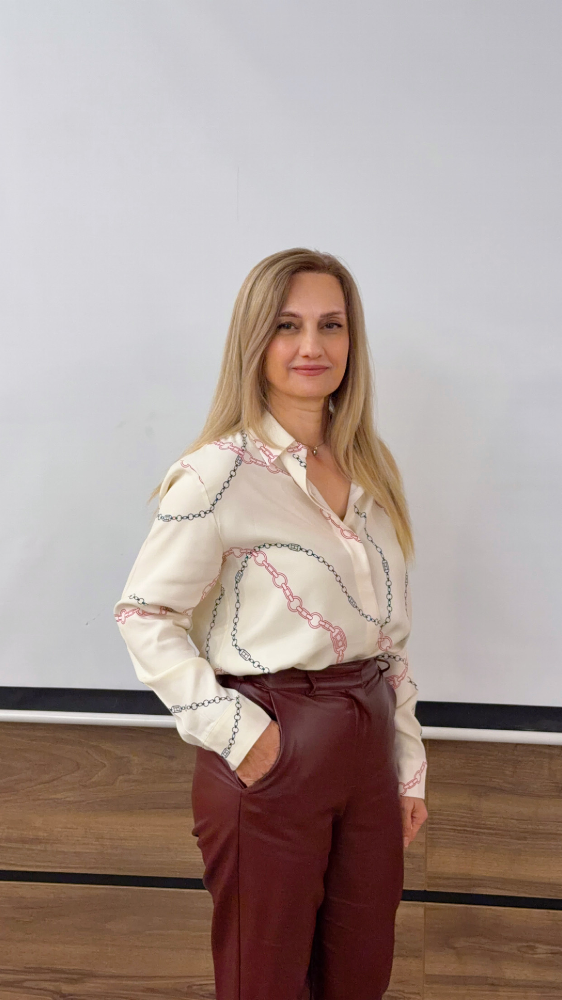
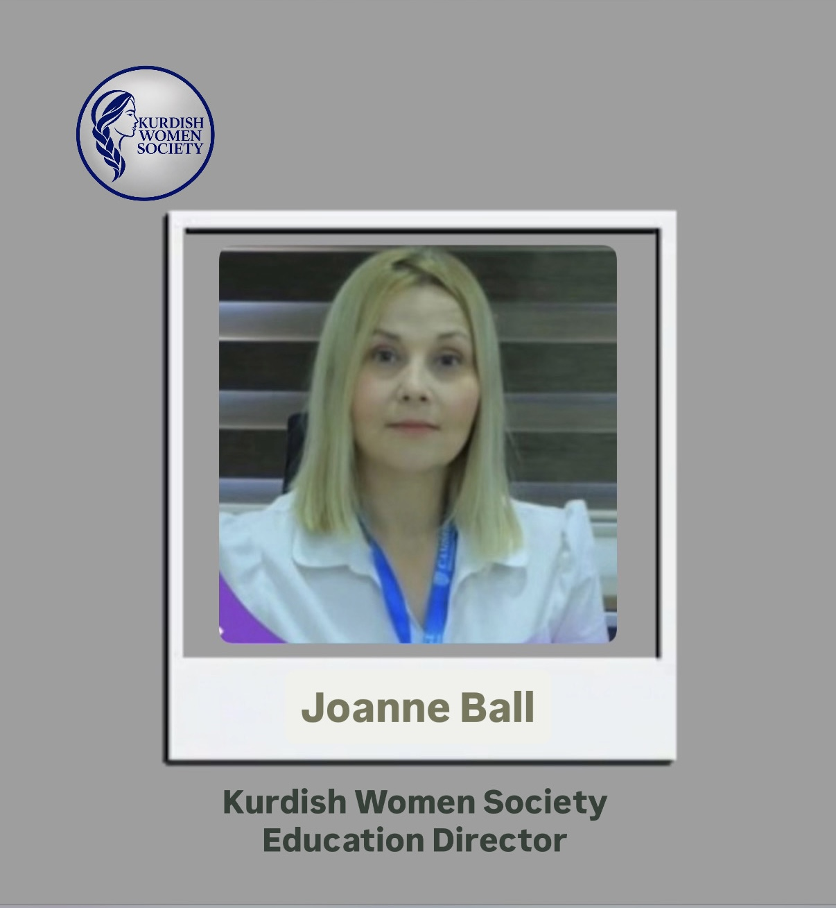

Our Leadership Team
Meet the dedicated leaders who guide the Kurdish Women Society and support our mission of empowering Kurdish women through wellbeing, culture, education, sport, confidence building and community engagement.

Dr. Banaz Star-Shirko
Dr. Banaz Star-Shirko is a British-Kurdish scientist, entrepreneur, and advocate for women’s empowerment. She brings together a passion for scientific discovery, innovation, and making a meaningful difference in society. Her journey reflects a commitment to lifelong learning, international collaboration, and the belief that knowledge has the power to transform lives and create opportunities. With multiple academic degrees in microbiology, medical microbiology, and genetics, including postgraduate education at the prestigious London School of Hygiene & Tropical Medicine, she has built a diverse scientific career spanning research, healthcare, and natural antimicrobial solutions. She is passionate about connecting science with everyday life, making research accessible, and encouraging greater public understanding of scientific developments. Her entrepreneurial vision led her to establish B Vanille Ltd, where she combines scientific knowledge with a love of nature and sustainability to develop clean, synthetic-free skincare inspired by plant-based ingredients. She believes that innovation should not only improve wellbeing but also respect the environment and contribute to a healthier future. Her commitment to positive change extends beyond business and research. Elected to the Microbiology Society Sustainability Committee, with her term beginning in January 2027, she looks forward to supporting a more environmentally responsible and sustainable scientific community. As the Founder and Director of the Kurdish Women Society, Dr. Star-Shirko is dedicated to creating opportunities, celebrating achievements, and amplifying the voices of Kurdish women internationally. Through her leadership, she is passionate about empowering women and girls through sport, art, and education, recognising these as powerful platforms for building confidence, nurturing talent, encouraging creativity, promoting wellbeing, and developing future leaders. Her vision is to create an inclusive and supportive community where Kurdish women can connect, share experiences, celebrate their heritage, and reach their full potential. Proud of her Kurdish heritage, she believes that education, ambition, and solidarity can break barriers and create meaningful opportunities for future generations. She encourages women to embrace their individuality, pursue their aspirations, and recognise that their cultural roots can be a powerful source of identity, confidence, and strength.

Director Name
Joanne Ball is a dynamic and dedicated education leader with over a decade of experience in international education and school management in Kurdistan and Iraq. Throughout her career, Joanne has been committed to improving educational quality, supporting teachers’ professional development, and creating enriching learning environments where young people can thrive. She believes education is one of the most powerful tools for transforming lives, opening opportunities, and strengthening communities. Alongside her professional roles, Joanne serves as Education Director of the Kurdish Women Society, where she is passionate about creating greater opportunities for Kurdish women and girls through investment in education, sports, and the arts. She believes these areas are fundamental to nurturing confidence, developing leadership, encouraging creativity, promoting wellbeing, and celebrating cultural identity. Drawing on her extensive international experience in education, she is committed to initiatives that empower women and girls, recognise their talents, and create pathways for future generations. Her vision is to help build a society where every woman and girl has the opportunity to learn, lead, participate, express herself, and fulfil her potential. Joanne firmly believes that investing in women and girls today means investing in stronger, more inclusive, and more confident communities for tomorrow.

Director Name
Responsible for governance, and ensuring the effective management of organisational records and compliance.

Director Name
Oversees budgeting, financial planning and responsible stewardship of the Society's resources, ensuring long-term sustainability.

Director Name
Brings valuable experience in community engagement and supports programmes designed to empower women and families.

Director Name
Supports the Society's objectives through leadership, advocacy and the promotion of equality, inclusion and cultural awareness.